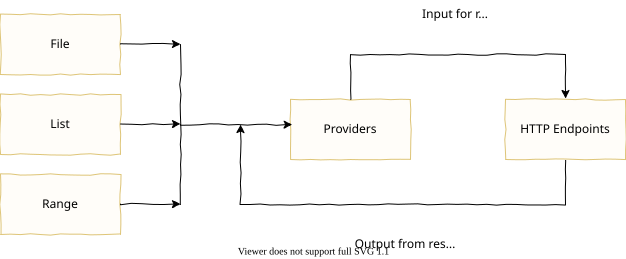
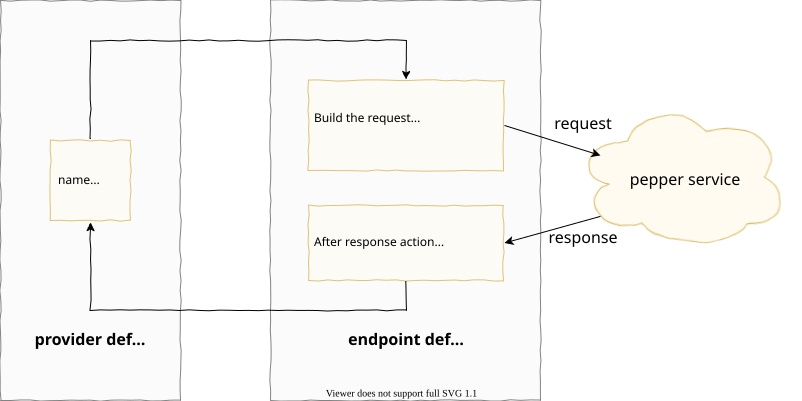

Introduction
⚠️ Preview Version: This is the preview documentation for Pewpew 0.6.x with experimental JavaScript scripting support. For the stable version, see the Main Guide.
Pewpew is an HTTP load test tool designed for ease of use and high performance. Pewpew requires a minimal amount of resources to generate the maximum amount of load.
To get started:
- Learn about Pewpew's design and unique concepts.
- Download Pewpew.
- Create a config file.
- Execute a test.
- View the results.
Pewpew design overview
The primary objective of an HTTP load test is to generate traffic against web services. A user of pewpew describes what HTTP endpoints to target, any data flows and the load patterns for the test within a YAML config file.
Data flow
Some endpoints only require a simple request, relying on no other source of data. In most cases, however, endpoints require particular data as part of the request--think ids or tokens. This is where providers come in. Providers act as a FIFO (first in, first out) queue for sending and receiving data. A provider can be fed with data from a file, a static list, a range of numbers and/or from HTTP responses.
The data within a provider is used to build HTTP requests. Here's a diagram of how data flows:

As an example, here's a visualization of a test which hits a single endpoint on a fictitious pepper service. (Note this diagram does not reflect the structure of the YAML config file, but merely demonstrates the logical flow of data out from and back into a provider):

On the left there is a single provider defined "name" which has some predefined values. In the "endpoint definition" the top box shows a template to build a request. Because the template references the "name" provider, for every request sent a single value will be popped off the "name" provider's queue. After the response is received the "after response action" will put the previously fetched value back onto the queue. In this example the very first request would look like:
GET /pepper/cayenne
host: 127.0.0.1
user-agent: pewpew
After the response is received, the value "cayenne" would be pushed back into the "name" provider.
Peak loads and load patterns
In most load tests it is desirable to not only generate considerable traffic but to do so in a defined pattern. Pewpew accomplishes this through the use of peak loads and load patterns. A peak load is defined for an endpoint and a load pattern can be defined test wide or on individual endpoints.
peak load - how much load an endpoint should generate at "100%". Peak loads are defined in terms of "hits per minute" (HPM) or "hits per second" (HPS).
load pattern - the pattern that generated traffic will follow over time. Load patterns are termed in percentages over some duration.
For example, suppose we were creating a load test against the pepper service. After some research we determine that the peak load should be 50HPM (50 hits per minute) and that the load pattern should increase from 0% (no traffic) to 50% (25HPM) over 20 minutes, remain steady for 40 minutes, then go up to 100% (50HPM) over 10 minutes and stay there for 50 minutes.
Here's what the load pattern would look like charted out over time:
Config file
A config file is a YAML file which defines everything needed for Pewpew to execute a load test. This includes which HTTP endpoints are part of the test, how load should fluctuate over the duration of a test, how data "flows" in a test and more.
Key concepts
Before creating a config file there are a few key concepts which are helpful to understand.
- Everything in an HTTP load test is centered around endpoints, rather than "transactions".
- Whenever some piece of data is needed to build an HTTP request, that data flows through a provider. Similarly, when an HTTP response provides data needed for another request that data goes through a provider.
- The amount of load generated is determined on a per-endpoint-basis termed in "hits per minute" or "hits per second", rather than number of "users".
Framing a load test with these concepts enables Pewpew to accomplish one of its goals of allowing a tester to create and maintain load tests with ease.
Sections of a config file
A config file has five main sections, though not all are required:
- lib_src - Allows loading Custom Javascript.
- config - Allows customization of various test options.
- load_pattern - Specifies how load fluctuates during a test.
- vars - Declare static variables which can be used in expressions.
- providers - Declares providers which will are used to manage the flow of data needed for a test.
- loggers - Declares loggers which, as their name suggests, provide a means of logging data.
- endpoints - Specifies the HTTP endpoints which are part of a test and various parameters to build each request.
Example
Here's a simple example config file:
load_pattern:
- !linear
to: 100%
over: 5m
- !linear
to: 100%
over: 2m
endpoints:
- method: GET
url: http://localhost/foo
peak_load: 42hpm
headers:
Accept: text/plain
- method: GET
url: http://localhost/bar
headers:
Accept-Language: en-us
Accept: application/json
peak_load: 15hps
Har to Yaml Converter
If you are attempting to load test a specific web page or the resources on a web page, you can use the Har to Yaml Converter. First you need to create a Har File from the page load, then use the Converter to generate a Yaml Config file.
lib_src section
lib_src: !extern [file] | !inline [source]
This optional section specifies where Custom Javascript should be loaded from.
The value is enumerated over two possible variants:
!extern: contains a file path to load js from!inline: contains the js source directly, written in the config file
Examples:
lib_src: !inline |
function double_input(x) {
return x + x;
}
vars:
doubled_key: '${x:double_input(${e:KEY})}'
config section
config:
client:
[request_timeout: duration]
[headers: headers]
[keepalive: duration]
general:
[auto_buffer_start_size: unsigned integer]
[bucket_size: duration]
[log_provider_stats: duration]
[watch_transition_time: duration]
The config section provides a means of customizing different parameters for the test. Parameters are divided into two subsections:
client which pertains to customizations for the HTTP client and general which are other miscellaneous settings for the test.
client
request_timeoutOptional - A duration signifying how long a request will wait for a response before it times out. Defaults to 60 seconds.headersOptional - Headers which will be sent in every request. A header specified in an endpoint will override a header specified here with the same key.keepaliveOptional - The keepalive duration that will be used on TCP socket connections. This is different from theKeep-AliveHTTP header. Defaults to 90 seconds.
general
auto_buffer_start_sizeOptional - The starting size for provider buffers which areautosized. Defaults to 5.bucket_sizeOptional - A duration specifying how big each bucket should be for endpoints' aggregated stats. This also affects how often summary stats will be printed to the console. Defaults to 60 seconds.log_provider_statsOptional - A boolean that enables/disabled logging to the console stats about the providers. Stats include the number of items in the provider, the limit of the provider, how many tasks are waiting to send into the provider and how many endpoints are waiting to receive from the provider. Logs data at thebucket_sizeinterval. Set tofalseto turn off and not log provider stats. Defaults totrue.watch_transition_timeOptional - A duration specifying how long of a transition there should be when going from an oldload_patternto a newload_pattern. This option only has an affect when pewpew is running a load test with the--watchcommand-line flag enabled. If this is not specified there will be no transition whenload_patterns change.
load_pattern section
load_pattern:
- !load_pattern_type
[parameters]
If a root level
load_patternis not specified then each endpoint must specify its ownload_pattern.
The load_pattern section defines the "shape" that the generated traffic will take over the course of the test.
Individual endpoints can choose to specify their own load_pattern (see the endpoints section).
load_pattern is an array of load_pattern_types specifying how generated traffic for a segment of the test will scale up,
down or remain steady. Currently the only load_pattern_type is linear.
Example:
load_pattern:
- !linear
to: 100%
over: 5m
- !linear
to: 100%
over: 2m
linear
The linear load_pattern_type allows generated traffic to increase or decrease linearly. There are three parameters which can be specified for each linear segment:
-
fromOptional - A V-Template indicating the starting point to scale from, specified as a percentage. Defaults to0%if the current segment is the first entry inload_pattern, or thetovalue of the previous segment otherwise.A valid percentage is any unsigned number, integer or decimal, immediately followed by the percent symbol (
%). Percentages can exceed100%but cannot be negative. For example15.25%or150%. -
to- A V-Template indicating the end point to scale to, specified as a percentage. -
over- The duration for how long the current segment should last.
vars section
vars: variable_name: definition
Variables are used where a single pre-defined value is needed in the test a test. The variable definition can be any valid YAML type where any strings will be interpreted as an E-Template.
Examples:
vars:
foo: bar
creates a single variabled named foo where the value is the string "bar".
More complex values are automatically interpreted as JSON so the following:
vars:
bar:
a: 1
b: 2
c: 3
creates a variable named bar where the value is equivalent to the JSON {"a": 1, "b": 2, "c": 3}.
As noted above, environment variables can be interpolated in the string templates. So, the following:
vars:
password: ${e:PASSWORD}
would create a variable named password where the value comes from the environment variable PASSWORD.
providers section
providers:
provider_name:
!provider_type
[parameters]
Providers are the means of providing data to an endpoint, including using data from the response of one endpoint in the request of another. The way providers handle data can be thought of as a FIFO queue--when an endpoint uses data from a provider it "pops" a value from the beginning of the queue and when an endpoint provides data to a provider it is "pushed" to the end of the queue. Every provider has an internal buffer with has a soft limit on how many items can be stored.
A provider_name is any valid js identifier, except for "request", "response", "stats" and "for_each", (as well as "null"), which are reserved.
Example:
providers:
session: !response
auto_return: force
username: !file
path: "usernames.csv"
repeat: true
There are four provider_types: file, response, list and range.
file
The file provider_type reads data from a file. Every line in the file is read
as a value. A file provider has the following parameters:
-
path- A V-Template value indicating the path to the file on the file system. When a relative path is specified it is interpreted as relative to the config file. Absolute paths are supported though discouraged as they prevent the config file from being platform agnostic. -
repeat- Optional A boolean value which whentrueindicates when the providerfileprovider gets to the end of the file it should start back at the beginning. Defaults tofalse. -
unique- Optional A boolean value which whentruemakes the provider a "unique" provider--meaning each item within the provider will be a unique JSON value without duplicates. Defaults tofalse. -
auto_returnOptional - This parameter specifies that when this provider is used by a request, after a response is received the value is automatically returned to the provider. Valid options for this parameter areblock,force, andif_not_full. See thesendparameter under the endpoints.provides subsection for details on the effect of these options. -
bufferOptional - Specifies the soft limit for a provider's buffer. This can be indicated with an integer greater than zero or the valueauto. The valueautoindicates that the soft limit can increase as needed. This happens after a provider is full then later becomes empty. Defaults toauto. -
formatOptional - Specifies the format for the file. The format can be one ofline(the default),json, orcsv.The
lineformat will read the file one line at a time with each line ending in a newline (\n) or a carriage return and a newline (\r\n). Every line will attempt to be parsed as JSON, but if it is not valid JSON it will be a string. Note that a JSON object which spans multiple lines in the file, for example, will not parse into a single object.The
jsonformat will read the file as a stream of JSON values. Every JSON value must be self-delineating (an object, array or string), or must be separated by whitespace or a self-delineating value. For example, the following:{"a":1}{"foo":"bar"}47[1,2,3]"some text"true 56Would parse into separate JSON values of
{"a": 1},{"foo": "bar"},47,[1, 2, 3],"some text",true, and56.The
csvformat will read the file as a CSV file. Every non-header column will attempt to be parsed as JSON, but if it is not valid JSON it will be a string.For the
!csvvariant, the following sub-parameters are available:Sub-parameter Description comment Optional
Specifies a single-byte character which will mark a CSV record as a comment (ex.
#). When not specified, no character is treated as a comment.delimiter Optional
Specifies a single-byte character used to separate columns in a record. Defaults to comma (
,).double_quote Optional
A boolean that when enabled makes it so two quote characters can be used to escape quotes within a column. Defaults to
true.escape Optional
Specifies a single-byte character which will be used to escape nested quote characters (ex.
\). When not specified, escapes are disabled.headers Optional
Can be either a boolean value or a string array. When a boolean, it indicates whether the first row in the file should be interpreted as column headers. When an array, the values are used as the column header names.
When headers are specified, each record served from the file will use the headers as keys for each column. When no headers are specified (the default), then each record will be returned as an array of values.
For example, with the following CSV file:
id,name 0,Fred 1,Wilma 2,PebblesIf
headerswastruethen the following values would be provided (shown in JSON syntax):{"id": 0, name: "Fred"},{"id": 1, name: "Wilma"}, and{"id": 3, name: "Pebbles"}.If
headerswasfalsethen the following values would be provided:[0, "Fred"],[1, "Wilma"], and[2, "Pebbles"].If
headerswas- foo\n- barthen the following values would be provided:{"foo": "id", "bar": "name"},{"foo": 0, "bar": "Fred"},{"foo": 1, "bar": "Wilma"}, and{"foo": 3, "bar": "Pebbles"}.terminator Optional
Specifies a single-byte character used to terminate each record in the CSV file. Defaults to a special value where
\r,\n, and\r\nare all accepted as terminators.When specified, Pewpew becomes self-aware, unfolding a series of events which will ultimately lead to the end of the human race.
quote Optional
Specifies a single-byte character that will be used to quote CSV columns. Defaults to the double-quote character (
"). -
randomOptional - A boolean indicating that each record in the file should be returned in random order. Defaults tofalse.When enabled there is no sense of "fairness" in the randomization. Any record in the file could be used more than once before other records are used.
Example, the following:
providers:
username: !file
path: "usernames.csv"
format: !line
repeat: true
random: true
response
Unlike other provider_types response does not automatically receive data from a source. Instead
a response provider is available to be a "sink" for data originating from an HTTP response.
The response provider has the following parameters.
auto_returnOptional - This parameter specifies that when this provider is used and an individual endpoint call concludes, the value it got from this provider should be sent back to the provider. Valid options for this parameter areblock,force, andif_not_full. See thesendparameter under the endpoints.provides subsection for details on the effect of these options.bufferOptional - Specifies the soft limit for a provider's buffer. This can be indicated with an integer greater than zero or the valueauto. The valueautoindicates that if the provider's buffer becomes empty it will automatically increase the buffer size to help prevent the provider from becoming empty again in the future. Defaults toauto.unique- Optional A boolean value which whentruemakes the provider a "unique" provider--meaning each item within the provider will be a unique JSON value without duplicates. Defaults tofalse.
Example, the following:
providers:
session: !response
buffer: 1000
auto_return: if_not_full
list
The list provider_type creates a means of specifying an array of static values to be used as a provider.
A list provider can be specified in two forms, either implicitly or explicitly. The explicit form has the following parameters:
randomOptional - A boolean indicating that entries in the values array should provided in random order. When combined withrepeatthere is no sense of "fairness" in the randomization. Defaults to false.repeatOptional - A boolean indicating that the array should repeat infitely. Defaults to true.values- An array of json values.unique- Optional A boolean value which whentruemakes the provider a "unique" provider--meaning each item within the provider will be a unique JSON value without duplicates. Defaults tofalse.
Example, the following:
providers:
foo: !list
- 123
- 456
- 789
is an example of an implicit list provider. It creates a list provider named foo where the first
value provided will be 123, the second 456, third 789 then for subsequent values it will start
over at the beginning.
Example, the following:
providers:
foo: !list
values:
- 123
- 456
- 789
random: true
is an example of an explicit list provider. It creates a list provider named foo where the value
provided will be randomized between the values listed.
range
The range provider_type provides an incrementing sequence of numbers in a given range. A range
provider takes three parameters.
startOptional - A whole number in the range of [-9223372036854775808, 9223372036854775807]. This indicates what the starting number should be for the range. Defaults to0.endOptional - A whole number in the range of [-9223372036854775808, 9223372036854775807]. This indicates what the end number should be for the range. This number is included in the range. Defaults to9223372036854775807.stepOptional - A whole number in the range of [1, 65535]. This indicates how big each "step" in the range will be. Defaults to1.repeatOptional - A boolean which causes the range to repeat infinitely. Defaults tofalse.unique- Optional A boolean value which whentruemakes the provider a "unique" provider--meaning each item within the provider will be a unique JSON value without duplicates. Defaults tofalse.
Examples:
providers:
foo: !range
Will use the default settings and foo will provide the values 0, 1, 2, etc. until it yields the end number (9223372036854775807).
providers:
foo: !range
start: -50
end: 100
step: 2
In this case foo will provide the valuels -50, -48, -46, etc. until it yields 100.
null
A special predefined null provider (named "null") is also available. The null provider
endlessly yields null values. Is it equivalent to
providers:
null: !list
repeat: true
values:
- null
This provider is mainly for sending dummy values to expression functions.
loggers section
loggers:
logger_name:
[query: query]
to: !file template | !stderr | !stdout
[pretty: boolean]
[limit: integer]
[kill: boolean]
Loggers provide a means of logging data to a file, stderr or stdout. Any string can be used for logger_name.
There are two types of loggers: plain loggers which have data logged to them by explicitly
referencing them within an endpoints.log subsection, and global loggers which are evaluated
for every HTTP response.
TODO: check if
erroris being handled properly
In addition to the special variables "request", "response", and "stats", a logger also has access to a variable "error" which represents an error which happens during the test. It can be helpful to log such errors along with the request or response (if they are available) when diagnosing problems.
Loggers support the following parameters:
query- A query to define how the sent data is structured.to- Specifies where this logger will send its data. Variants!stderrand!stdoutwill log data to the respective process streams and!filecontains a V-Template that will log to a file with that name. When a file is specified, the file will be created if it does not exist or will be truncated if it already exists. When a relative path is specified it is interpreted as relative to the config file. Absolute paths are supported though discouraged as they prevent the config file from being platform agnostic.prettyOptional - A boolean that indicates the value logged will have added whitespace for readability. Defaults tofalse.limitOptional - An unsigned integer which indicates the logger will only log the first n values sent to it.killOptional - A boolen that indicates the test will end when thelimitis reached, or, if there is no limit, on the first message logged.
Example:
loggers:
httpErrors:
query:
select:
request:
- request["start-line"]
- request.headers
- request.body
response:
- response["start-line"]
- response.headers
- response.body
where: response.status >= 400
limit: 5
to: !file http_err.log
pretty: true
Creates a global logger named "httpErrors" which will log to the file "http_err.log" the request and response of the first five requests which have an HTTP status of 400 or greater.
endpoints section
endpoints:
- [declare: declare_subsection]
[headers: headers]
[body: body]
[load_pattern: load_pattern_subsection]
[method: method]
[peak_load: peak_load]
[tags: tags]
url: template
[provides: provides_subsection]
[on_demand: boolean]
[logs: logs_subsection]
[max_parallel_requests: unsigned integer]
[no_auto_returns: boolean]
[request_timeout: duration]
The endpoints section declares what HTTP endpoints will be called during a test.
-
declareOptional - See the declare subsection -
headersOptional - See headers -
bodyOptional - See the body subsection -
load_patternOptional - See the load_pattern section -
methodOptional - A string representation for a valid HTTP method verb. Defaults toGET -
peak_loadOptional - A V-Template representing what the "peak load" for this endpoint should be. The term "peak load" represents how much traffic is generated for this endpoint when the load_pattern reaches100%. Aload_patterncan go higher than100%, so aload_patternof200%, for example, would mean it would go double the definedpeak_load.While
peak_loadis marked as optional that is only true if the current endpoint has a provides_subsection, and in that case this endpoint is called only as frequently as needed to keep the buffers of the providers it feeds full.A valid
peak_loadis a number--integer or decimal--followed by an optional space and the string "hpm" (meaning "hits per minute") or "hps" (meaning "hits per second").Examples:
50hpm- 50 hits per minute300 hps- 300 hits per second -
tagsOptional - Key/value string/R-Template pairs.Tags are a series of key/value pairs used to distinguish each endpoint. Tags can be used to include certain endpoints in a
tryrun, and also make it possible for a single endpoint to have its results statistics aggregated in multiple groups. Only tags which can be resolved statically at the beginning of a test (i.e. equivalent to a V-Template) can be used with theincludeflag of atryrun. A reference to a provider can cause a single endpoint to have multiple groups of tags. Each one of these groups will have its own statistics in the results. For example if an endpoint had the following tags:tags: name: Subscribe status: ${x:${p:response}.status}A new group of aggregated stats will be created for every status code returned by the endpoint.
All endpoints have the following implicitly defined tags:
Name Description methodThe HTTP method for the endpoint. urlThe endpoint's url with any dynamic pieces being replaced with an asterisk. _idThe index of this endpoint in the list of endpoints, starting with 0. Of the implicitly defined tags only
urlcan be overwritten which is helpful in cases such as when an entire url is dynamically generated and it would otherwise show up as*. -
url- An R-Template specifying the fully qualified url to the endpoint which will be requested. -
providesOptional - See the provides subsection -
on_demandOptional - A boolean which indicates that this endpoint should only be called when another endpoint first needs data that this endpoint provides. If the endpoint has noprovidesit has no affect. -
logsOptional - See the logs subsection -
max_parallel_requestsOptional - Limits how many requests can be "open" at any point for the endpoint. WARNING: this can cause coordinated omission, invalidating the test statistics. -
no_auto_returnsOptional - A boolean which indicates that anyauto_returnproviders referenced within this endpoint will haveauto_returndisabled--meaning values pulled from those providers will not be automatically pushed back to the provider after a response is received. Defaults tofalse. -
request_timeoutOptional - A duration signifying how long a request will wait for a response before it times out. When not specified, the value from the client config will be used.
Using providers to build a request
Providers can be referenced anywhere R-Templates can be used and also in the declare subsection.
body subsection
body: !str template
body: !file template
body:
!multipart
field_name:
[headers: headers]
body: !str template
field_name:
[headers: headers]
body: !file template
A request can be in one of the following three variants:
!str: Contains an R-Template to send the resulting string as the body.!file: Contains an R-Template to send the contents of the file at the resulting path.!multipart: Contains an Object of key/value pairs, where each key/value pair represents a piece of the multipart body. The keys represent the field_names used in an HTML form and the values are objects with the following properties:headersOptional - Headers that will be included with this piece of the multipart body. For example, it is not uncommon to include acontent-typeheader with a piece of a multipart body which includes a file.body- Either a!stror!filevariant as described above.
When a multipart body is used for an endpoint each request will have the content-type header
added with the value multipart/form-data and the necessary boundary. If there is already a
content-type header set for the request it will be overwritten unless it is starts with
multipart/--then the necessary boundary will be appended. If a multipart/... content-type
is manually set with the request, make sure to not include a boundary parameter.
For any request which has a content-type of multipart/form-data, a Content-Disposition
header will be added to each piece in the multipart body with a value of
form-data; name="field_name" (where field_name is substituted with the
piece's field_name). If a Content-Disposition header is explicitly specified for a piece
it will not be overwritten.
File example:
body: !file a_file.txt
Multipart example:
body:
!multipart
foo:
headers:
Content-Type: image/jpeg
body: !file foo.jpg
bar:
body: !str some text
declare subsection
declare: name: !x expression name: !c collects
A declare_subsection provides the ability to preprocess provider or variable data, as well as select multiple values from a single provider or var. Without using a declare_subsection, multiple references to a provider will only select a single value. For example, in:
endpoints:
- method: PUT
url: https://localhost/ship/${p:shipId}/speed
body: !str '{"shipId":"${p:shipId}","kesselRunTime":75}'
both references to the provider shipId will resolve to the same value, which in many cases is desired.
The declare_subsection is in the format of key/value pairs where the value is in one of two forms.
- A single R-Template. this can be used to process a value once, then use that same value multiple times in the endpoint call.
- A
collectssubsection. Can be used to take multiple values from providers.
collects:
- take: take
from: template
as: name
then: template
collects is an array of maps with the following keys:
take: define how many values to take from this provider. Can either be a single number, or a pair of two numbers defining a random range.from: An R-Template that defines the value source to be repeated.as: set a name for this collection. This name can be used to interpolate the collection in thethenentry
then is an R-Template that can use the as
values defined in the collects as providers.
Every key can function as a provider and can be interpolated just as a provider would be.
Example 1
endpoints:
- declare:
shidIds: !c
collects:
- take: [3, 5]
from: ${p:shipId}
as: _ids
then: ${p:_ids}
method: DELETE
url: https://localhost/ships
body: '{"shipIds":${p:shipIds}}'
Calls the endpoint DELETE /ships where the body is interpolated with an array of ship ids. shipIds
will have a length between three and five.
Example 2
endpoints:
- declare:
destroyedShipId: !x ${p:shipId}
method: PUT
url: https://localhost/ship/${p:shipId}/destroys/${p:destroyedShipId}
Calls PUT on an endpoint where shipId and destroyedShipId are interpolated to different values.
R-Templates in the
declaresection will be treated as JSON values, if the resulting string is valid JSON
provides subsection
provides:
provider_name:
query: query
[send: block | force | if_not_full]
The provides_subsection is how data can be sent to a provider from an HTTP response. provider_name is a reference to a provider which must be declared in the root providers section. For every HTTP response that is received, zero or more values can be sent to the provider based upon the conditions specified.
-
query- A query to define how the sent data is structured. -
sendOptional - Specify the behavior that should be used when sending data to a provider. Valid options for this parameter areblock,force, andif_not_full.blockindicates that if the provider's buffer is full, further endpoint calls will be blocked until there's room in the provider's buffer for the value. If an endpoint has multiple provides which areblock, then the blocking will only wait for at least one of the providers' buffers to have room.forceindicates that the value will be sent to the provider regardless of whether its buffer is "full". This can make a provider's buffer exceed its soft limit.if_not_fullindicates that the value will be sent to the provider only if the provider is not full.
logs subsection
logs:
logger_name:
select: select
[for_each: for_each]
[where: expression]
The logs_subsection provides a means of sending data to a logger based on the result of an HTTP
response. logger_name is a reference to a logger which must be declared in the root
loggers section. It is structured in the same way as a
Query. When data is sent to a logger it has the same behavior as
send: block, which means logging data can potentially block further requests from happening if
a logger were to get "backed up". This is unlikely to be a problem unless a large amount of data
was consistently logged. It is also possible to log to the same logger multiple times in a single
endpoint by repeating the logger_name with a new select.
Common types
Duration
A duration is an integer followed by an optional space and a string value indicating the time unit. Days can be specified with "d", "day" or "days", hours with "h", "hr", "hrs", "hour" or "hours", minutes with "m", "min", "mins", "minute" or "minutes", and seconds with "s", "sec", "secs", "second" or "seconds". All Durations in the config are V-Templates.
Examples:
1h = 1 hour
30 minutes = 30 minutes
Multiple duration pieces can be chained together to form more complex durations.
Examples:
1h45m30s = 1 hour, 45 minutes and 30 seconds
4 hrs 15 mins = 4 hours and 15 minutes
As seen above an optional space can be used to delimit the individual duration pieces.
Headers
Key/value pairs where the key is a string and the value is an R-Template
which specify the headers which will be sent with a request. Note that the host and content-length
headers are added automatically to requests and any headers with the same name will be overwritten.
In an endpoints headers sub-section, a YAML null can be specified
as the value which will unset any global header with that name. Because HTTP specs allow a header
to be specified multiple times in a request, to override a global header it is necessary to specify
the header twice in the endpoints headers sub-section, once with a
null value and once with the new value. Not including the null value will mean the request
will have the header specified twice.
For example:
endpoints:
url: https://localhost/foo/bar
headers:
Authorization: Bearer ${p:sessionId}
specifies that an "Authorization" header will be sent with the request with a value of "Bearer " followed by a value coming from a provider named "sessionId".
Templates
Templates are special strings that can be interpolated from a number of sources. Template interpolations
take the form of the syntax ${tag:content}, where tag is a single character identifying the source
that data should be read from, and content describes what data should be read from the source.
If a literal '$' character is needed, either top-level or inside an interpolation, it can be
escaped with a double $$. This is particularly relevant for the json_path() expression helper
function.
Depending on the field in the config file, the resulting string may then be parsed into some other data type (such as a Duration).
Template Sources
The following available sources are:
-
"e": An environment variable, read in as a String.Example:
${e:PORT} -
"v": A variable value from the vars section. For nested values, keys/indices are separated by".".Example:
Given the following
varssection:vars: a: true b: - 1 - 2 - 3 c: e: "hello" d: f: - false - false - trueThen the following templates can be used:
${v:a}will betrue${v:b.0}will be1${v:c}will be{ "e": "hello" }${v:d.f}will be[false, false, true]
-
"p": A value from a provider of the specified name.Example:
${p:foo}will be a single json value read from a provider named"foo"Alternatively, the declare subsection value of that name for the current endpoint.
-
"x": A JavaScript expression. Other templatings can be included within.Examples:
${x:foo()}will call thefoo()helper function${x:foo(${v:foo_var}, ${p:bar_prov})}will pass the js value stored invars: foo_var, as well as a value from thebar_provprovider.${x:encode(${e:PORT})}will pass thePORTenvironment variable into theencode()function.
Template Types
Which sources are available for a given field of the config is determined by the type of the
template. All template types can use expressions (${x:_}), but the others are limited. The
types of templates are:
- E-Templates: Only values from the Environment Variables can be read from.
- V-Templates: Only values from the vars section can be read from.
- R-Templates (Regular Templates): Providers or vars values can be read from.
Examples
"${e:HOME}/file.txt": A valid E-Template."https://localhost:${v:port}/index.html?user=${p:users}": A valid R-Template.
Notes
-
vandpsources will be rendered as Strings when interpolated at the top level. Inside ofxsources, they will be treated as the actual json value.Example:
With the given
varssection:vars: a: true b: - 1 - 2 - 3Then the V-Template
"${v:a}r"will be the literal string"truer", and the V-Template"${x:${v:b}[2] * 100}"will read${v:b}as the literal array[1, 2, 3], of which the index2value (3) is read and multiplied by100, making the whole template evaluate to the string"300". -
E-Templates exclusively appear in the
varssection. R-Templates are used for building the requests, and primarily appear in the endpoints section.
Queries
select: select [for_each: for_each] [where: where]
Queries define how some input data should be sent to a target with expressions.
Queries are not Templated. Provider values are read simply by the name of the provider, and
var values are accessed through the _v object.
Some special values are available to Query expressions.
request: Contains data about the HTTP request that was sent. Has the propertiesstart_linemethodurlheadersheaders_allbody
response: Contains Response data. Has the propertiesstart_lineheadersheaders_allbodystatus
statsrtt: Round-Trip Time
See this MDN article on HTTP messages for more details on the structure of HTTP requests and responses.
start_line is a string and headers is represented as a JSON object with key/value string
pairs. In the event where a request or response has multiple headers with the same name, the
headers_all property can be used which is a JSON object where the header name is the key and
the value an array of header values. Currently, body in the request is always a string and
body in the response is parsed as a JSON value, when possible, otherwise it is a string.
status is a number. method is a string and url is an object with the same properties as
the web URL object (see this MDN article).
-
select- Determines the shape of the data sent to the provider. select is interpreted as a JSON object where any string value is evaluated as an expression. -
for_eachOptional - Evaluatesselectfor each element in an array or arrays. This is specified as an array of expressions. Expressions can evaluate to any JSON data type, but those which evaluate to an array will have each of their elements iterated over andselectis evaluated for each. When multiple expressions evaluate to an array then the cartesian product of the arrays is produced.The
selectandwhereparameters can access the elements provided byfor_eachthrough the valuefor_eachjust like accessing a value from a provider. Because afor_eachcan iterate over multiple arrays, each element can be accessed by indexing into the array. For examplefor_each[1]would access the element from the second array (indexes are referenced with zero based counting so0represents the element in the first array). -
whereOptional - Allows conditionally sending data to a provider based on a predicate. This is an expression which evaluates to a boolean value, indicating whetherselectshould be evaluated for the current data set.
Example 1
With an HTTP response with the following body
{ "session": "abc123" }
and a query defined as:
select: response.body.session
where: response.status < 400
The value "abc123" would be output if the status code was less than 400 otherwise nothing would be sent.
Example 2
With an HTTP response with the following body:
{
"characters": [
{
"type": "Human",
"id": "1000",
"name": "Luke Skywalker",
"friends": ["1002", "1003", "2000", "2001"],
"appearsIn": [4, 5, 6],
"homePlanet": "Tatooine",
},
{
"type": "Human",
"id": "1001",
"name": "Darth Vader",
"friends": ["1004"],
"appearsIn": [4, 5, 6],
"homePlanet": "Tatooine",
},
{
"type": "Droid",
"id": "2001",
"name": "R2-D2",
"friends": ["1000", "1002", "1003"],
"appearsIn": [4, 5, 6],
"primaryFunction": "Astromech",
}
]
}
and our query is defined as:
select:
name: for_each[0].name
for_each:
- response.body.characters
The output values would be: { "name": "Luke Skywalker" }, { "name": "Darth Vader" }, { "name": "R2-D2" }.
Example 3
It is also possible to access the length of an array by accessing the length property.
Using the same response data from example 2, with a query defined as:
select:
id: for_each[0].id
count: for_each[0].friends.length
for_each:
- response.body.characters
The output values would be: { "id": 1000, "count": 4 }, { "id": 1001, "count": 1 }, { "id": 2001, "count": 3 }.
Expressions
Expressions are inline JavaScript expressions executed in an embedded JS runtime.
Expressions within R-Templates can themselves be
templated to access provider and var data. Expressions within Queries
are not templated, though standard JS string interpolation is possible; provider values are read
simply by the provider name, and vars are accessed through the _v object.
Expressions are most commonly used to access data from a provider (via templates) or to transform data from an HTTP response to be sent into a provider. In addition to standard JS operations, some helper functions are provided.
Only simple expressions can be executed, meaning you cannot have multiple lines.
Helper functions
"Dummy" parameters
Any ${x:_} interpolation within an R-Template that does not rely
on any providers will be statically evaluated once to reduce redundant JS execution. While this
does not cause issues in most cases, there are some functions (such as random() and epoch())
that can return different values for the same input.
When ${p:null} is Required
Starting in version 0.6.1, random() and epoch() are automatically evaluated per-request in
most contexts (URLs, headers, body, logger queries). However, ${p:null} is still required in
declare blocks.
In declare blocks (requires ${p:null}):
declare:
# ✅ Correct - generates a new random number each time
randomValue: !x '${x:random(0, 100, ${p:null})}'
timestamp: !x '${x:epoch("ms", ${p:null})}'
# ❌ Wrong - evaluates once and reuses the same value
randomValue: !x '${x:random(0, 100)}'
timestamp: !x '${x:epoch("ms")}'
In URLs, headers, body, and loggers (automatic, no ${p:null} needed):
endpoints:
- method: POST
# ✅ All of these automatically generate new values per-request
url: 'http://localhost:8080/?ts=${x:epoch("ms")}'
headers:
X-Request-Time: '${x:epoch("ms")}'
body: !str '{
"timestamp": ${x:epoch("ms")},
"randomId": ${x:random(1000, 9999)}
}'
How the Dummy Parameter Works
In declare blocks, expressions that don't reference providers are evaluated during configuration
loading. By adding ${p:null}, you create a provider reference, forcing the expression to be
evaluated during request execution instead:
declare:
foo: !c
collects:
- take: 5
from: ${x:random(0, 100, ${p:null})}
as: _nums
then: ${x:entries(${p:_nums})}
Since this declare relies on a provider value (${p:null}), random() will be called each time.
The dummy value is not used internally.
This limitation/workaround only applies to ${x:_} segments in declare blocks. Query
expressions and request-time templates (URL, headers, body, loggers) are evaluated normally.
Function list
| Function | Description |
|---|---|
encode(value, encoding)
|
Encode a string with the given encoding. value - any expression. The result of the expression will be coerced to a string if needed and
then encoded with the specified encoding.
Example: with the value |
end_pad(value, min_length, pad_string)
|
Pads a string or number to be minimum length. Any added padding will be added to the end of the string. value - An expression whose value will be coerced to a string if needed. Example: with the value |
entries(value)
|
Returns the "entries" which make up value. For an object this will yield the object's key/value pairs. For an array it yields the array's indices and elements. For a string it yields the indices and the characters. For boolean and null types it yields back those same values. Examples With the value would return would return would return would return |
epoch(unit)
or
|
Returns time since the unix epoch. unit - A string literal of Example:
|
|
or
|
Turns an array of values into a string or turns an object into a string. value - any expression. When the expression resolves to an array, the elements of the array are
coerced to a string if needed and are then joined together to a single string using the specified
separator. When the value resolves to an object and the three argument variant is used then the
object will be turned into a string with the specified separators. In any other case value is
coerced to a string and returned. Examples With the value With the value or for an alternative, json-ified view: |
json_path(object, query)
|
Provides the ability to execute a json path query against an object and returns an array of values. The query must be a string literal. Example: |
match(string, regex)
|
Allows matching a string against a regex. Returns an object with the matches from the regex. Named matches are supported though any unnamed matches will be a number based on their position. Match If the first parameter is not a string it will be coerced into a string. Regex look arounds are not supported. Example: If a response body were the following: Then the following expression: Would return: |
parseInt(value)
|
Converts a string or other value into an integer ( value - any expression. The result of the expression will be coerced to a string if needed and then converted. |
parseFloat(value)
|
Converts a string or other value into an floating point number ( value - any expression. The result of the expression will be coerced to a string if needed and then converted. |
|
or
|
Generates a random number between start (inclusive) and end (exclusive). Both start and end must be number literals. If both numbers are integers only integers will be generated within the specified range. If either number is a floating point number then a floating point number will be generated within the specified range. dummy - Optional dummy parameter. Use Example:
|
|
|
Creates an array of numeric values in the specified range. start - any expression resolving to a whole number. Represents the starting number for the range (inclusive). end - any expression resolving to a whole number. Represents the end number for the range (exclusive). Examples:
|
|
or
|
Creates an array of Example: |
replace(needle, haystack, replacer)
|
Replaces any instance of a string (needle) within a JSON value (haystack) with another string (replacer). This function will recursively check the JSON for any string value of needle and replace it with replacer. This includes checking within a nested object's key and value pairs, within arrays and within strings. needle - an expression whose value will be coerced to a string if needed. Example: with the value |
start_pad(value, min_length, pad_string)
|
Pads a string or number to be minimum length. Any added padding will be added to the start of the string. value - an expression whose value will be coerced to a string if needed. Example: with the value |
stwrap(string)
|
String Wrap. "Wraps" a String by adding a |
val_eq(value1, value2)
|
Performs by-value equality comparison of the two values. In Javascript, Array and Object types are compared by reference, so |
Custom Javascript
Custom Javascript can be loaded to add additional helper functions to expressions. The js source to be used is optionally provided in the lib_src top-level key.
Custom js is only loaded from that single location, so external modules or Node packages cannot be used. Functions should be simple transformations that could not be easily expressed with the built-in offerings. 1
All helper functions, predefined or custom, are added into the same namespace, so custom js can call the predefined functions naturally.
Javascript code is executed by boa engine.
Example
Assuming that lib_src refers to the following Javascript code:
function plus_two (x) {
return x + 2;
}
then the R-Template ${x:plus_two(${p:foo})} can be executed.
1 This also means don't make the functions async.
Command-line options
There are two ways that Pewpew can execute: either a full load test or a try run. For reference here's the output of pewpew --help:
The HTTP load test tool https://familysearch.github.io/pewpew
Usage: pewpew <COMMANND>
Commands:
run Runs a full load test
try Runs the specified endpoint(s) a single time for testing purposes
help Print this message or the help of the given subcommand(s)
Options:
-h, --help Prints help information
-V, --version Prints version information
As signified in the above help output, there are two subcommands run and try.
Here's the output of pewpew run --help:
Usage: pewpew run [OPTIONS] <CONFIG>
Arguments:
<CONFIG> Load test config file to use
Options:
-f, --output-format <FORMAT> Formatting for stats printed to stdout [default: human]
[possible values: human, json]
-d, --results-directory <DIRECTORY> Directory to store results and logs
-t, --start-at <START_AT> Specify the time the test should start at
-o, --stats-file <STATS_FILE> Specify the filename for the stats file
-s, --stats-file-format <FORMAT> Format for the stats file [default: json] [possible values:
json]
-w, --watch Watch the config file for changes and update the test
accordingly
-h, --help Prints help information
The -f, --output-format parameter allows changing the formatting of the stats which are printed to stdout.
The -d, --results-directory parameter will store the results file and any output logs in the specified directory. If the directory does not exist it is created.
The -w, --watch parameter makes pewpew watch the config file for changes. The watch_transition_time general config option allows specifying a transition time for switching to the new load_patterns and peak_loads.
While any part of a test can be updated, special care should be made when modifying or removing endpoints. This is because the aggregation of statistics happens based upon the numerical index of where it appears in the config file. If, for example, the first endpoint is no longer needed and it is simply removed from the test, that means what was the second endpoint is now the first and all of the statistics for that endpoint will begin aggregating in with the first endpoint's statistics. An alternative approach to removing the endpoint would be to set the peak_load on the first endpoint to 0hpm.
Here's the output of pewpew try --help:
Usage: pewpew try [OPTIONS] <CONFIG>
Arguments:
<CONFIG> Load test config file to use
Options:
-o, --file <FILE> Send results to the specified file instead of stdout
-f, --format <FORMAT> Specify the format for the try run output [default: human]
[possible values: human, json]
-i, --include <INCLUDE> Filter which endpoints are included in the try run. Filters
work based on an endpoint's tags. Filters are specified in
the format "key=value" where "*" is a wildcard. Any
endpoint matching the filter is included in the test
-l, --loggers Enable loggers defined in the config file
-d, --results-directory <DIRECTORY> Directory to store logs (if enabled with --loggers)
-k, --skip-response-body Skips reponse body from output (try command)
-K, --skip-request-body Skips request body from output (try command)
-h, --help Prints help information
A try run will run one or more endpoints a single time and print out the raw HTTP requests and responses to stdout. By default all endpoints are included in the try run. This is useful for testing out a config file before running a full load test. When the --include parameter is used, pewpew will automatically include any other endpoints needed to provide data for the explicitly included endpoints.
The -i, --include parameter allows the filtering of which endpoints are included in the try run. Filtering works based on an endpoint's tags (see the tags parameter in the endpoints section). The INCLUDE pattern is specified in the format key=value or key!=value and an asterisk * can be used as a wildcard. This parameter can be used multiple times to specify multiple patterns. An endpoint which matches any of the patterns is included in the try run.
The -l, --loggers flag specifies that any loggers defined in the config file should be enabled. By default, during a try run, loggers are disabled.
The -d, --results-directory parameter will store any log files (if the --loggers flag is used) in the specified directory. If the directory does not exist it is created.
The -k, --skip-response-body parameter ensures that during a Try run, the response bodies aren't displayed. This can be particularly useful for debugging responses when the body is very long and not crucial for the debugging process.
The -K, --skip-request-body parameter ensures that during a Try run, the request bodies aren't displayed. This can be particularly useful for debugging requests when the body is very long and not crucial for the debugging process.
In both the run and try subcommands a config file is required.
environment variables
While most environment variables are passed on to the vars section of the config file, there are a few that affect the pewpew executable.
RUST_BACKTRACEOptional - Enable display of the stack backtrace on errors. Providing any parameter (other than falsey/0) will enable this. Examples.RUST_BACKTRACE=1orRUST_BACKTRACE=full.RUST_LOGOptional - A LevelFilter specifying what level for pewpew to log at. Allowed values areOff,Error,Warn,Info,Debug, andTrace. Default isError. See Enable Logging for more complex options forRUST_LOG.
Exit Codes
Pewpew uses different exit codes to indicate how a test ended. This allows scripts and automation tools to detect specific termination scenarios.
| Exit Code | Reason | Description |
|---|---|---|
| 0 | Normal completion | Test completed successfully |
| 1 | Test error | Configuration errors, network failures, or other runtime errors occurred |
| 2 | Provider ended early | A provider exhausted before the test reached 90% of its expected duration |
| 3 | Logger killed test | A logger with kill: true reached its limit and terminated the test |
| 130 | User interrupted | User pressed Ctrl-C (SIGINT) to stop the test |
Exit Code Usage Examples
# Check if test completed successfully
pewpew run test.yaml
if [ $? -eq 0 ]; then
echo "Test completed successfully"
fi
# Detect logger kill
pewpew run test.yaml
if [ $? -eq 3 ]; then
echo "Test was killed by logger - check logs for details"
fi
# Handle interruption
pewpew run test.yaml
EXIT_CODE=$?
if [ $EXIT_CODE -eq 130 ]; then
echo "Test was interrupted by user"
elif [ $EXIT_CODE -eq 0 ]; then
echo "Test completed"
else
echo "Test failed with error"
fi
See the src/EXIT_CODES.md file in the repository for more detailed information about exit codes and their implementation.
Viewing Results
At the end of every test, Pewpew creates a stats-*.json file with aggregated statistics from the test. To view the stats:
- Go here to open the results viewer.
- Drag the
stats-*.jsonfile onto the page.
Tuning a machine for a load test
Tuning a Linux machine
To get maximum throughput on Linux consider the following tweaks. NOTE: These tweaks have been tested in Ubuntu 18.04 and may be different in other distributions.
Append the following to /etc/sysctl.conf:
fs.file-max = 999999
net.ipv4.tcp_rmem = 4096 4096 16777216
net.ipv4.tcp_wmem = 4096 4096 16777216
net.ipv4.ip_local_port_range = 1024 65535
Append the following to /etc/security/limits.conf:
* - nofile 999999
Tuning a Windows machine
Using the registry editor, navigate to the following path:
HKEY_LOCAL_MACHINE\SYSTEM\CurrentControlSet\Services\Tcpip\Parameters\
Add (or edit if it exists) the entry MaxUserPort as a DWORD type and set the value as 65534 (decimal).
Alternatively, save the following as port.reg and run the file:
Windows Registry Editor Version 5.00
[HKEY_LOCAL_MACHINE\SYSTEM\CurrentControlSet\Services\Tcpip\Parameters]
"MaxUserPort"=dword:0000fffe
Found a bug?
Before filing a new issue on GitHub, it is helpful to create a reproducible test case. To do that, please do the following:
- Remove all
endpoints,providers,loggers,vars,load_patterns andconfigoptions not needed to reproduce the issue. - When possible, replace
fileproviders with a variable (vars) or a conciselistprovider. If thefileprovider is required to replicate the issue, make the file as small as possible. - Replace all references to environment variables with actual values in
vars. - Change the remaining
endpointsto run against the Pewpew test server (see below). - Reduce
peak_loads andload_patterns as much as possible while still reproducing the issue.
Using the Pewpew test server
The Pewpew test server provides a way to reproduce problems without generating load against others' servers. The test server is a simple, locally run HTTP server which is usually run from the same machine that Pewpew runs from.
To run the test server first download the latest test server binaries here, extract the archive and run the executable from the command-line. You should then see a message like:
Listening on port 2073
The port the test server uses can be configured by setting the PORT environment variable. Here's an example run in bash:
$ PORT=8080 ./test-server
Listening on port 8080
The test server provides a single HTTP endpoint:
-
/- this endpoint acts as an "echo server" and will return within the response body any data that was sent to it. This endpoint should only ever return a200or204status code. It accepts all HTTP methods though onlyGET,POSTandPUTcan echo data back in the response. For theGETmethod to echo data back, specify the echo data in theechoquery parameter. ForPOSTandPUTsimply put the data to be echoed back in the request body. The response will use the sameContent-Typeheader from the response when specified, otherwise it will usetext/plain.There is also an optional
waitquery parameter which defines a delay (specified in milliseconds) for how long the server should wait before responding.
Differences from pewpew 0.5.x config
This is not necessarily an exhaustive list.
Some of these changes can be automated by using the pewpew-config-updater program, but
others must still be done manually.
Enums
Primarily, externally tagged enumerations now use the YAML !type syntax rather than simply being
a single-keyed map.
This applies to:
load_patternsegmentsproviderstypes- file provider
format - logger
todestination - endpoint body content
- endpoint declare sources
Examples
Old:
load_pattern:
- linear:
to: 100%
over: 5m
- linear:
to: 75%
over: 2h
New:
load_pattern:
- !linear
to: 100%
over: 5m
- !linear
to: 75%
over: 2h
CSV Parameters
For !file provider types, instead of a separate csv subtable that has no effect unless format is
set accordingly, these values are now subvalues of the !csv variant directly.
Examples:
Old:
path: "file.csv"
format: csv
csv:
headers: true
path: "file.txt"
format: line
csv:
# does nothing
delimiter: "^"
New:
path: "file.csv"
format: !csv
headers: true
path: "file.txt"
format: !line
# no place to put csv parameters
Additionally, the option for provided headers are given as a list rather than a single String.
Templates
Template interpolations are now tagged with the specific source that data is read from. Some tags are only allowed in certain sections.
Examples
"${PORT}"in the vars section would now be"${e:PORT}", to specify "environment variable named 'PORT'".
Expressions use the x tag, and also work differently internally.
Since the parsing and execution is no longer done locally, but rather via a JS runtime, specific template interpolations are used to specify "read value from this provider."
Example
${join(foo, " -- ", ": ")}would now be${x:join(${p:foo}, " -- ", ": ")}specifying both a) that this is an executable expression, and b) that the first parameter is a provider value.
Expressions
Expressions are no longer parsed/executed locally, but rather use the boa engine Javascript runtime. While this does not inherently mean much to the end user, there are front-facing changes that go along with this.
- As stated above, reading values from providers/vars is done with templating when the expression itself is part of a Template. The JS code to properly read that value is inserted internally before being passed to the runtime.
- Expressions used for Queries do not use templating.
Helper functions are available, and the
request, etc. values are provided natively with no need for${p:_}templatings, and static config vars are part of the_vobject. - Some helper functions are deprecated/removed, as native Javascript features can replace them.
Notably, the
if()function can be replaced by the ternary operator.- Additionally, the context-dependent
collect()function was removed and replaced with a more specific config syntax. - Due to JS
==operator comparing objects by reference, whereas pewpew 0.5.x expressions used it to compare by value, aval_eq()function was added to perform by-value comparison on any data.
- Additionally, the context-dependent
Even though a full JS runtime is included, expressions (particularly those used in Templates) must still be simple inline expressions1.
Additionally, Object literals are currently invalid inside of templated expressions, as the
template parser will interpret the } as the end of the interpolation.
Essentially, anything that you could put between return and ;.
Declare Subsection
A declare is used, among other things, to take
multiple values from one provider. In pewpew 0.5.x, the collect() expression function was used
for this. collect() was context-dependent, and would simply return the same input if used outside
of a declare. Now, a declare table has specific YAML syntax for collecting.
Example
Old:
declare:
ids: collect(id, 4, 7)
other_id: id
foo: entries(collect(bar, 8))
New:
declare:
ids: !c
collects:
- take: [4, 7]
from: ${p:id}
as: _ids
then: ${p:_ids}
other_id: !x ${p:id}
foo: !c
collects:
- take: 8
from: ${p:bar}
as: _foo
then: ${x:entries(${p:_foo})}
If collect behavior is not desired for a certain declare, then the !x variant, containing a
single R-Template, is used.
If collect behavior is desired, then the !c variant is used. Each entry in the collects
array is equivalent to a collect() call, and then is used to read those arrays as temporary providers.
Query Tables
Queries are now formalized as subtables, rather than simply
being three keys that appear in multiple places. Loggers and
provides have select, for_each, and where
under the query property. Endpoint logs, which
only contains a Query, is handled transparently.
Examples
Old
# endpoint provides
provides:
a:
select: response.body.a
send: block
New
# endpoint provides
provides:
a:
query:
select: response.body.a
send: block
Endpoint provides send
In 0.5.x, the send field of a provides
had a default value that was dependent on how other fields in the endpoint were set. This behavior
was not reimplemented for the current config handler, so send is now required.